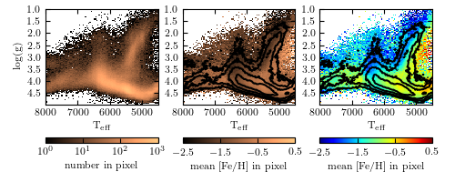

Stellar Parameters Hess Diagram¶
Figure 1.11.
A Hess diagram of the number per pixel (left) and [Fe/H] metallicity (center, right) of SEGUE Stellar Parameters Pipeline stars. In the center and right panels, contours representing the number density are overplotted for comparison. These two panels show identical data, but compare a grayscale and multicolor plotting scheme. This is an example of a situation in which multiple colors are very helpful in distinguishing close metallicity levels. This is the same data as shown in figure 1.5.
{kind=link}
WARNING: RuntimeWarning: divide by zero encountered in log10 [unknown]
WARNING: RuntimeWarning: divide by zero encountered in log10 [unknown]
WARNING: RuntimeWarning: divide by zero encountered in log10 [unknown]
# Author: Jake VanderPlas
# License: BSD
# The figure produced by this code is published in the textbook
# "Statistics, Data Mining, and Machine Learning in Astronomy" (2013)
# For more information, see http://astroML.github.com
# To report a bug or issue, use the following forum:
# https://groups.google.com/forum/#!forum/astroml-general
import numpy as np
from matplotlib import pyplot as plt
#----------------------------------------------------------------------
# This function adjusts matplotlib settings for a uniform feel in the textbook.
# Note that with usetex=True, fonts are rendered with LaTeX. This may
# result in an error if LaTeX is not installed on your system. In that case,
# you can set usetex to False.
from astroML.plotting import setup_text_plots
setup_text_plots(fontsize=8, usetex=True)
#------------------------------------------------------------
# Get SDSS SSPP data
from astroML.datasets import fetch_sdss_sspp
data = fetch_sdss_sspp()
# do some reasonable magnitude cuts
rpsf = data['rpsf']
data = data[(rpsf > 15) & (rpsf < 19)]
# get the desired data
logg = data['logg']
Teff = data['Teff']
FeH = data['FeH']
#------------------------------------------------------------
# Plot the results using the binned_statistic function
from astroML.stats import binned_statistic_2d
N, xedges, yedges = binned_statistic_2d(Teff, logg, FeH,
'count', bins=100)
FeH_mean, xedges, yedges = binned_statistic_2d(Teff, logg, FeH,
'mean', bins=100)
# Define custom colormaps: Set pixels with no sources to white
cmap = plt.cm.copper
cmap.set_bad('w', 1.)
cmap_multicolor = plt.cm.jet
cmap_multicolor.set_bad('w', 1.)
# Create figure and subplots
fig = plt.figure(figsize=(5, 2))
fig.subplots_adjust(wspace=0.22, left=0.1, right=0.95,
bottom=0.12, top=0.95)
#--------------------
# First axes:
ax = plt.subplot(131, xticks=[4000, 5000, 6000, 7000, 8000])
plt.imshow(np.log10(N.T), origin='lower',
extent=[xedges[0], xedges[-1], yedges[0], yedges[-1]],
aspect='auto', interpolation='nearest', cmap=cmap)
plt.xlim(xedges[-1], xedges[0])
plt.ylim(yedges[-1], yedges[0])
plt.xlabel(r'$\mathrm{T_{eff}}$')
plt.ylabel(r'$\mathrm{log(g)}$')
cb = plt.colorbar(ticks=[0, 1, 2, 3], pad=0.2,
format=r'$10^{%i}$', orientation='horizontal')
cb.set_label(r'$\mathrm{number\ in\ pixel}$')
plt.clim(0, 3)
#--------------------
# Second axes:
ax = plt.subplot(132, xticks=[4000, 5000, 6000, 7000, 8000])
plt.imshow(FeH_mean.T, origin='lower',
extent=[xedges[0], xedges[-1], yedges[0], yedges[-1]],
aspect='auto', interpolation='nearest', cmap=cmap)
plt.xlim(xedges[-1], xedges[0])
plt.ylim(yedges[-1], yedges[0])
plt.xlabel(r'$\mathrm{T_{eff}}$')
cb = plt.colorbar(ticks=np.arange(-2.5, 1, 1), pad=0.2,
format=r'$%.1f$', orientation='horizontal')
cb.set_label(r'$\mathrm{mean\ [Fe/H]\ in\ pixel}$')
plt.clim(-2.5, 0.5)
# Draw density contours over the colors
levels = np.linspace(0, np.log10(N.max()), 7)[2:]
plt.contour(np.log10(N.T), levels, colors='k',
extent=[xedges[0], xedges[-1], yedges[0], yedges[-1]])
#--------------------
# Third axes:
ax = plt.subplot(133, xticks=[4000, 5000, 6000, 7000, 8000])
plt.imshow(FeH_mean.T, origin='lower',
extent=[xedges[0], xedges[-1], yedges[0], yedges[-1]],
aspect='auto', interpolation='nearest', cmap=cmap_multicolor)
plt.xlim(xedges[-1], xedges[0])
plt.ylim(yedges[-1], yedges[0])
plt.xlabel(r'$\mathrm{T_{eff}}$')
cb = plt.colorbar(ticks=np.arange(-2.5, 1, 1), pad=0.2,
format=r'$%.1f$', orientation='horizontal')
cb.set_label(r'$\mathrm{mean\ [Fe/H]\ in\ pixel}$')
plt.clim(-2.5, 0.5)
# Draw density contours over the colors
levels = np.linspace(0, np.log10(N.max()), 7)[2:]
plt.contour(np.log10(N.T), levels, colors='k',
extent=[xedges[0], xedges[-1], yedges[0], yedges[-1]])
plt.show()